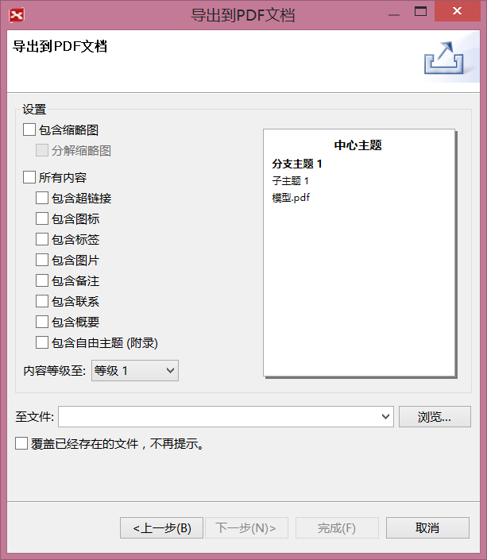
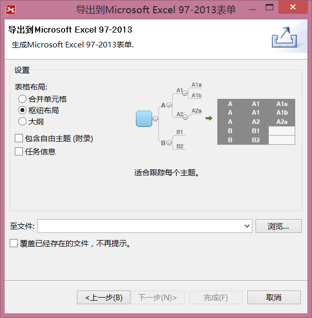
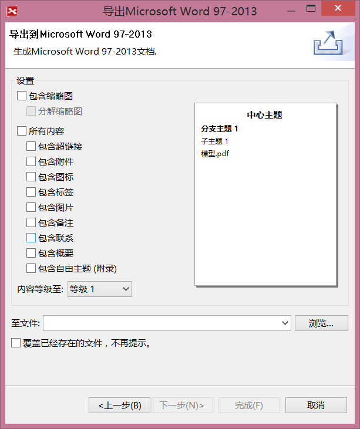
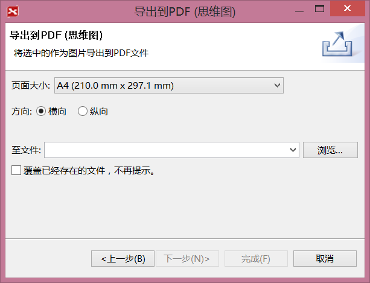

在XMIND增强版中，您可以将思维图导出至更多的格式，例如MindManager文件，矢量图（SVG），PDF文档或思维图，微软办公套件Word/PPT演示文件/Excel表格文件等。 步骤很简单，此处以导出PDF文件为例说明，
按照下列步骤导出至PDF文件：
- 在菜单栏选择“文件 > 导出”；
- 在导出对话框中选择 文档--PDF文档；
- 点击“下一步”；
- 在预览对话框中设定是否需要导出：缩略图、备注、自由主题、标签、图标、图片、联系以及超链接等等；
- 选择文件保存位置；
- 点击“完成” 即可。

同样的步骤，您可以将思维图导出为其他的文件格式。



注意：在导出为CSV或者Microsoft Excel文件的时候，您可以选择将思维图中的任务信息一并导出。
您可能还对下列内容感兴趣……